Contents
- Homework 1 StatOD
- Problem 1
- Problem 2 - State Transition Matrix
- ode45 to propagation of reference - 15 orbits
- Integrate second trajectory by perturbing initial state
- Propagating state using STM
- Show Integrator Is Functioning
- Problem 2 part b - Implement STM Computation
- ode45 STM Propagation
- Problem 3 - Measurement Partials
- Problem 4 - Simulating Measurements
- Plots for Range and Range Rate
- Elevation angle plot
- problem 3 part C - Doppler Shift
- Part D - Range Rate Noise
- Noise Difference
Homework 1 StatOD
addpath('C:\Users\user\OneDrive - UCB-O365\Desktop\Spring 2025\StatOD\repo');
Problem 1
% part a syms x y z a mu J2 J3 r = sqrt(x^2 + y^2 + z^2); U = mu/r - mu*a^2*J2*(3*z^2-r^2)/(2*r^5) - mu*a^3*J3*(5*z^3-3*z*r^2)/(2*r^7); % take partial of U to get acceleration each component accelxyz = jacobian(U, [x y z]); ax_latex = latex(accelxyz(1)); ay_latex = latex(accelxyz(2)); az_latex = latex(accelxyz(3)); % take the partial of the acceleration to build up STM syms x y z vx vy vz mu J2 J3 stateVec = [x y z vx vy vz mu J2 J3]; Aaccel = jacobian(accelxyz, stateVec); % final A matrix % Amat = [zeros(3,3), ones(3,3), zeros(3,3); ... % double(subs(Aaccel,stateVec,state)) ; ... % zeros(3,9)]; % part c state = [-0.64901376519124, 1.18116604196553, -0.75845329728369, -1.10961303850152, -0.84555124000780, -0.57266486645795, -0.55868076447397, 0.17838022584977, -0.19686144647594]; [Amat] = Utility.DynamicsA_J2_J3(state); A = load('CanvasAproblem1.mat'); Adiff = struct2array(A) - Amat
Adiff =
Columns 1 through 3
0 0 0
0 0 0
0 0 0
1.2516975402832e-05 2.6702880859375e-05 -6.96182250976563e-05
2.6702880859375e-05 -2.38418579101563e-05 0.000131607055664063
-6.96182250976563e-05 0.000131607055664063 1.62124633789063e-05
0 0 0
0 0 0
0 0 0
Columns 4 through 6
0 0 0
0 0 0
0 0 0
0 0 0
0 0 0
0 0 0
0 0 0
0 0 0
0 0 0
Columns 7 through 9
0 0 0
0 0 0
0 0 0
2.24113464355469e-05 1.80443748831749e-09 -7.05718994140625e-05
-4.29153442382813e-05 -3.49245965480804e-09 0.0001220703125
5.81741333007813e-05 1.9557774066925e-08 -5.340576171875e-05
0 0 0
0 0 0
0 0 0
Problem 2 - State Transition Matrix
SMA = 10000; % km eccen = 0.001; inc = 40; % deg RAAN = 80; % deg AOP = 40; % deg TA0 = 0; % deg % Convert from Orbital Elemenets to Cartesian to get initial state vector [r0,v0] = Utility.OrbCart(SMA,eccen,inc,RAAN,AOP,TA0,Const.OrbConst.muEarth); % Period of orbit period = 2*pi*sqrt(SMA^3/Const.OrbConst.muEarth); % propagate for 15 orbits t = 0:10:15*period; % initial state vector Y0 = [r0;v0]; J2 = 0.00108248; Re = Const.OrbConst.EarthRadius;
Tpqw_ijk =
-0.351900933636988 -0.689527809386471 0.633022221559489
0.839911542566906 -0.531121287922501 -0.11161889704895
0.413175911166535 0.492403876506104 0.766044443118978
r =
-3515.49032703351
8390.71631024339
4127.62735255368
v =
-4.35767632217815
-3.35657913876455
3.1118929278699
ode45 to propagation of reference - 15 orbits
odeoptions = odeset('RelTol', 1e-12, 'AbsTol', 1e-12); [T,Y] = ode45(@Utility.NumericJ2Prop, t, Y0, odeoptions, Const.OrbConst.muEarth, J2, Re); % reference trajectory refPos = Y(:,1:3); refVel = Y(:,4:6); % plotting trajectory fig = 1; figure(fig) subplot(2,1,1) plot(refPos) grid on subplot(2,1,2) plot(refVel) grid on xlabel('Seconds') sgtitle('Reference Trajectory', 'Interpreter', 'latex') fig = fig + 1;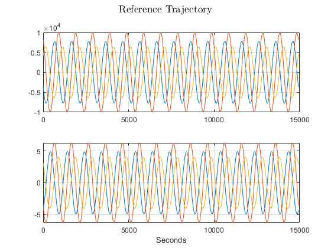
Integrate second trajectory by perturbing initial state
pert0 = [1;0;0;0;.01;0]; % perturbed initial state Y0pert = Y0 + pert0; % use ode45 to propagate for 15 orbits odeoptions = odeset('RelTol', 1e-12, 'AbsTol', 1e-12); [T,Ypert] = ode45(@Utility.NumericJ2Prop, t, Y0pert, odeoptions, Const.OrbConst.muEarth, J2, Re); % reference trajectory pertPos = Ypert(:,1:3); pertVel = Ypert(:,4:6); % Plotting Trajectory figure(fig) subplot(2,1,1) plot(pertPos) grid on ylabel('Position', 'Interpreter', 'latex') subplot(2,1,2) plot(pertVel) grid on xlabel('seconds') ylabel('Velocity', 'Interpreter', 'latex') sgtitle('Total State Propagation', 'Interpreter', 'latex') fig = fig + 1; % compare reference trajecory with perturbed trajectory trajDiff = Y - Ypert; % difference in position posDiff = trajDiff(:,1:3); % difference in velocity velDiff = trajDiff(:,4:6); % plot the difference figure(fig) subplot(2,1,1) plot(posDiff) grid on ylabel('Position', 'Interpreter', 'latex') subplot(2,1,2) plot(velDiff) grid on xlabel('seconds') ylabel('Velocity', 'Interpreter', 'latex') sgtitle('Propagation of $\delta x$ with ODE45', 'Interpreter', 'latex') fig = fig + 1;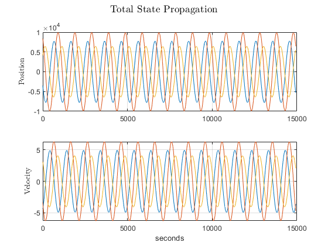 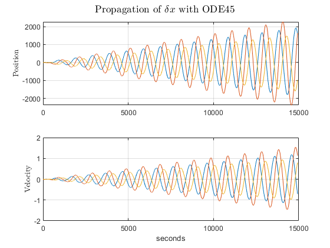
Propagating state using STM
syms x y z vx vy vz a J2 mu r = sqrt(x^2 + y^2 + z^2); mu = Const.OrbConst.muEarth; J2 = 0.00108248; a = 6378; U = mu/r - mu*a^2*J2*(3*z^2-r^2)/(2*r^5); % take partial of U to get acceleration each component accelxyz = jacobian(U, [x y z]); stateVector = [x, y, z, vx, vy, vz]; accelWRTState = jacobian(accelxyz, stateVector); simplify(accelWRTState) % create a funciton handle for the Jacobian to be evaulted later % numerically A_func = matlabFunction(accelWRTState, 'Vars', {x, y, z, vx, vy, vz}); deltaT = 10; % seconds % set pert0 as the first deltaX deltaX_old = pert0; % pre-allocate deltaX deltaX = zeros(6, length(t)); for i = 1:length(t) % Update A based on the current state reference trajectory currState = Y(i,:); A = [zeros(3,3), eye(3,3); ... double(A_func(currState(1), currState(2), currState(3), currState(4), currState(5), currState(6)))]; % propagate the delta forward in time deltaX(:,i) = expm(A * deltaT) * deltaX_old; deltaX_old = deltaX(:,i); end % plot results for perturbation propagation with STM figure(fig) subplot(2,1,1) plot(deltaX(1:3,:)') grid on xlabel('seconds') ylabel('$\delta x$ position', 'Interpreter', 'latex') subplot(2,1,2) plot(deltaX(4:6,:)') grid on xlabel('seconds') ylabel('$\delta x$ velocity', 'Interpreter', 'latex') sgtitle('Propagation of $\delta x$ with STM', 'Interpreter', 'latex') fig = fig + 1; % --- Validity of using STM to propagate % veloDiff and posDiff are the perturbations from ODE45 posODEdiffSTM = deltaX(1:3,:)' - posDiff; velODEdiffSTM = deltaX(4:6,:)' - velDiff; figure(fig) subplot(2,1,1) plot(posODEdiffSTM) grid on subplot(2,1,2) plot(velODEdiffSTM) grid on sgtitle('Difference of $\delta x$ with STM and ODE Propgation', 'Interpreter', 'latex') fig = fig + 1;
ans = [(13695806883309290*x^6 + 20543710324963935*x^4*y^2 + 20543710324963935*x^4*z^2 + 1809246700193654636544*x^4 + 1356935025145240977408*x^2*y^2 - 12212415226307168796672*x^2*z^2 - 6847903441654645*y^6 - 20543710324963935*y^4*z^2 - 452311675048413659136*y^4 - 20543710324963935*y^2*z^4 + 1356935025145240977408*y^2*z^2 - 6847903441654645*z^6 + 1809246700193654636544*z^4)/(17179869184*(x^2 + y^2 + z^2)^(9/2)), (15*x*y*(1369580688330929*x^4 + 2739161376661858*x^2*y^2 + 2739161376661858*x^2*z^2 + 150770558349471219712*x^2 + 1369580688330929*y^4 + 2739161376661858*y^2*z^2 + 150770558349471219712*y^2 + 1369580688330929*z^4 - 904623350096827318272*z^2))/(17179869184*(x^2 + y^2 + z^2)^(9/2)), (15*x*z*(1369580688330929*x^4 + 2739161376661858*x^2*y^2 + 2739161376661858*x^2*z^2 + 452311675048413659136*x^2 + 1369580688330929*y^4 + 2739161376661858*y^2*z^2 + 452311675048413659136*y^2 + 1369580688330929*z^4 - 603082233397884878848*z^2))/(17179869184*(x^2 + y^2 + z^2)^(9/2)), 0, 0, 0] [ (15*x*y*(1369580688330929*x^4 + 2739161376661858*x^2*y^2 + 2739161376661858*x^2*z^2 + 150770558349471219712*x^2 + 1369580688330929*y^4 + 2739161376661858*y^2*z^2 + 150770558349471219712*y^2 + 1369580688330929*z^4 - 904623350096827318272*z^2))/(17179869184*(x^2 + y^2 + z^2)^(9/2)), (- 6847903441654645*x^6 - 20543710324963935*x^4*z^2 - 452311675048413659136*x^4 + 20543710324963935*x^2*y^4 + 1356935025145240977408*x^2*y^2 - 20543710324963935*x^2*z^4 + 1356935025145240977408*x^2*z^2 + 13695806883309290*y^6 + 20543710324963935*y^4*z^2 + 1809246700193654636544*y^4 - 12212415226307168796672*y^2*z^2 - 6847903441654645*z^6 + 1809246700193654636544*z^4)/(17179869184*(x^2 + y^2 + z^2)^(9/2)), (15*y*z*(1369580688330929*x^4 + 2739161376661858*x^2*y^2 + 2739161376661858*x^2*z^2 + 452311675048413659136*x^2 + 1369580688330929*y^4 + 2739161376661858*y^2*z^2 + 452311675048413659136*y^2 + 1369580688330929*z^4 - 603082233397884878848*z^2))/(17179869184*(x^2 + y^2 + z^2)^(9/2)), 0, 0, 0] [ (15*x*z*(1369580688330929*x^4 + 2739161376661858*x^2*y^2 + 2739161376661858*x^2*z^2 + 452311675048413659136*x^2 + 1369580688330929*y^4 + 2739161376661858*y^2*z^2 + 452311675048413659136*y^2 + 1369580688330929*z^4 - 603082233397884878848*z^2))/(17179869184*(x^2 + y^2 + z^2)^(9/2)), (15*y*z*(1369580688330929*x^4 + 2739161376661858*x^2*y^2 + 2739161376661858*x^2*z^2 + 452311675048413659136*x^2 + 1369580688330929*y^4 + 2739161376661858*y^2*z^2 + 452311675048413659136*y^2 + 1369580688330929*z^4 - 603082233397884878848*z^2))/(17179869184*(x^2 + y^2 + z^2)^(9/2)), -(6847903441654645*x^6 + 20543710324963935*x^4*y^2 + 1356935025145240977408*x^4 + 20543710324963935*x^2*y^4 + 2713870050290481954816*x^2*y^2 - 20543710324963935*x^2*z^4 - 10855480201161927819264*x^2*z^2 + 6847903441654645*y^6 + 1356935025145240977408*y^4 - 20543710324963935*y^2*z^4 - 10855480201161927819264*y^2*z^2 - 13695806883309290*z^6 + 3618493400387309273088*z^4)/(17179869184*(x^2 + y^2 + z^2)^(9/2)), 0, 0, 0]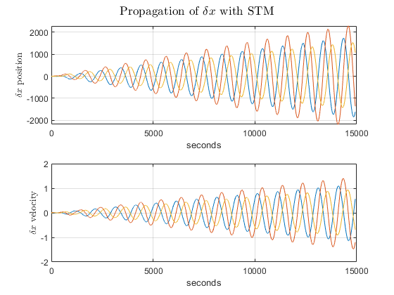 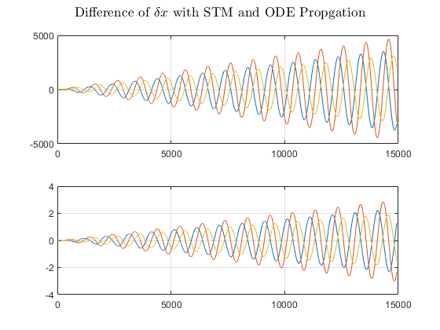
Show Integrator Is Functioning
% Given values for propagation r0 = [-3515.49032703351, 8390.71631024339, 4127.62735255368]; v0 = [-4.35767632217815, -3.35657913876455, 3.1118929278699]; J2 = 0.0010826269; mu = 398600.4415; tspan = 0:9952.0140542363; % use ode45 to propagate for 15 orbits odeoptions = odeset('RelTol', 1e-12, 'AbsTol', 1e-12); [T,YpartA] = ode45(@Utility.NumericJ2Prop, tspan, [r0'; v0'], odeoptions, mu, J2, 6378); % Compare Difference % State after 1 orbit period (t = t0 + 9952.0140542363 s) r = [-3521.73568944413, 8376.51345222035, 4151.07556206157]; v = [-4.35773976889406, -3.36804988677892, 3.09937317355002]; stateDiff = YpartA(9951, :)' - [r'; v']
stateDiff =
1.62740434461739e-08
1.84118107426912e-08
-1.07165760709904e-08
-3.92308407981545e-12
1.38422606710265e-11
5.31130694980675e-12
Problem 2 part b - Implement STM Computation
% load in canvas data to check code X0 = load('X0canvasprob2.mat'); Phi0 = load('Phi0canvasprob2.mat'); % initial state initState = [struct2array(X0)'; reshape(struct2array(Phi0), [49,1])]; Re = 6378; mu = Const.OrbConst.muEarth; % put the state into my code [ydot] = Utility.NumericJ2Prop(t,initState,mu,initState(7),Re); % get just the state outputState = ydot(1:7) % get just the phiDot outputPhiDot = reshape(ydot(8:end), [7,7]) % subtract from what I am supposed to get PhidotCanvas = load('Phidotcanvasprob2.mat'); XdotCanvas = load('XdotCanvasprob2.mat'); % subtract to see how close I am StateDiffernece = outputState - struct2array(XdotCanvas)' phiDotDifference = outputPhiDot - struct2array(PhidotCanvas)
outputState =
0.87587414783453
-0.24278953633334
0.1668134394535
3413686851177.17
-3207050208768.91
357532131195.697
0
outputPhiDot =
Columns 1 through 3
-0.27515724067569 1.40216228633781 0.78840921622743
0.60365844582581 -1.36774699097611 0.92873604681331
1.7812518932425 -0.29253499915187 -0.49079037626976
8623316544092.63 -13270636762467.4 -2377141237137.59
3594622546175.42 13304253840432.5 4640092972826.98
-12213869495081 -8797861337559.08 1951695586029.15
0 0 0
Columns 4 through 6
-0.5352479677759 0.92621639416896 0.19974026229838
-0.15508038549279 -1.48167521167231 0.42586431913121
0.61212237077216 -0.55805780868504 -1.27004345059705
3041231990889.75 -9252589372824.85 -10647863464404.4
-8821801281771.42 3101266557663.67 17084383676013
-476668803634.497 -749665500163.869 1645281687361.35
0 0 0
Column 7
0.04073081174943
0.28297017716199
0.0635612193025
-9133367252776.52
4716460510738.95
9473313663562.51
0
StateDiffernece =
0
0
0
0.02978515625
-0.013671875
-0.00152587890625
0
phiDotDifference =
Columns 1 through 3
0 0 0
0 0 0
0 0 0
12372683570244.5 -11066484881512.4 4751367886281.35
0.013671875 0.123046875 0.013671875
6914588918890.83 -6184607672082.13 2655345992608.04
0 0 0
Columns 4 through 6
0 0 0
0 0 0
0 0 0
-6693812199159.54 -12333028897677.9 2725804604346.97
-0.04296875 0.029296875 0.0703125
-3740899005027.34 -6892427537493.35 1523341173745.71
0 0 0
Column 7
0
0
0
-2910735574169.31
-0.017578125
-1626691560703.49
0
ode45 STM Propagation
% starting STM is identity InitStatePartC = [Y0; J2; reshape(eye(7,7), [49,1])]; % use ode45 to propagate for 15 orbits odeoptions = odeset('RelTol', 1e-12, 'AbsTol', 1e-12); [T,YPartC] = ode45(@Utility.NumericJ2Prop, t, InitStatePartC, odeoptions, Const.OrbConst.muEarth, J2, Re); % Get the STM history STMhist = YPartC(1:end, 8:end); % starting perturbation state pert_prev = [pert0; J2]; % multiply the perturbation by each STM in time for i = 1:14929 STM = reshape(STMhist(i,:), [7,7]); pert_next(1:7, i) = STM * pert_prev(1:7, i); pert_prev(1:7, i+1) = pert_next(1:7, i); end figure(fig) subplot(2,1,1) plot(pert_prev(1:3,end))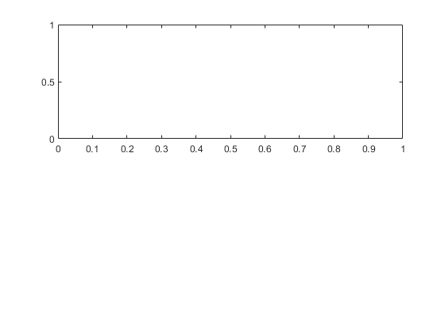
Problem 3 - Measurement Partials
% test data R = [0.42286036448769; 1.29952829655200; -1.04979323447507]; V = [-1.78641172211092; 0.81604308103192; -0.32820854314251]; % spacecraft state scState = [R;V]; Rs = [-1.21456561358767; 1.11183287253465; -0.50749695482985]; Vs = [-0.00008107614118; -0.00008856753168; 0]; % station State statState = [Rs; Vs]; % Linearized Sensing matrix function call [Htilde] = Utility.HtildeSC(scState, statState) [HtildeStation] = Utility.HtildeStation(scState, statState)
Htilde =
Columns 1 through 3
0.943721609480218 0.108177242829583 -0.312549528769213
-0.216436065590536 0.563578048868017 -0.458452371651641
Columns 4 through 6
0 0 0
0.943721609480218 0.108177242829583 -0.312549528769213
HtildeStation =
-0.943721609480218 -0.108177242829583 0.312549528769213
0.216436065590536 -0.563578048868017 0.458452371651641
Problem 4 - Simulating Measurements
% staion lat and long stat1.lat = -35.398333; stat1.long = 148.981944; stat2.lat = 40.427222; stat2.long = 355.749444; stat3.lat = 35.247164; stat3.long = 243.205; % earth rotation rotEarth.Deg = 360 / (24*60*60); % deg/sec rotEarth.rad = (2*pi) / (24*60*60); % initial rotation of ECEF wrt ECI Theta0 = 122; % convert groundstations to cartesian [stat1.ecef.x, stat1.ecef.y, stat1.ecef.z] = sph2cart(deg2rad(stat1.long), deg2rad(stat1.lat), 6378); [stat2.ecef.x, stat2.ecef.y, stat2.ecef.z] = sph2cart(deg2rad(stat2.long), deg2rad(stat2.lat), 6378); [stat3.ecef.x, stat3.ecef.y, stat3.ecef.z] = sph2cart(deg2rad(stat3.long), deg2rad(stat3.lat), 6378); % build components for ease stat1ecef = [stat1.ecef.x, stat1.ecef.y, stat1.ecef.z]; stat2ecef = [stat2.ecef.x, stat2.ecef.y, stat2.ecef.z]; stat3ecef = [stat3.ecef.x, stat3.ecef.y, stat3.ecef.z]; % each column is station efec position statAllecef = [stat1ecef',stat2ecef',stat3ecef']; %--- compute the velocity of each station % projection of each station onto XY plane stat1XYproj = [stat1ecef(1:2)';0]; stat2XYproj = [stat2ecef(1:2)';0]; stat3XYproj = [stat3ecef(1:2)';0]; statAllXYProj = [stat1XYproj, stat2XYproj, stat3XYproj]; for stat = 1:3 % station velocity magnitude statVelMag(stat) = rotEarth.rad * norm(statAllXYProj(:,stat)); % velocity unit vector statVelUnitVec(1:3,stat) = cross([0;0;1], statAllXYProj(:,stat)) / (norm([0;0;1])*norm(statAllXYProj(:,stat))); % station velocity vector stationVeloVec(1:3,stat) = statVelMag(stat) * statVelUnitVec(1:3,stat); end % create a function that rotates about the z axis - ransformation btwn both % frames! Rz = @(Theta) [cosd(Theta) -sind(Theta) 0; sind(Theta) cosd(Theta) 0; 0 0 1]; % theta of Earth rotation - to be updated each step! thetaCurrent = Theta0; % reference transmit frequency for Doppler refTransFreq = 8.44*10^9; % Hz % speed of light c = 229792; % km/s % simulate the Earth spinning for i = 1:length(t) % how far the Earth has rotated - EVERY 10 SECONDS! thetaCurrent = t(i)*rotEarth.Deg + Theta0; % reference trajecotry is satellite position and velocity satPos = refPos(i,:); satVel = refVel(i,:); spacecraftState(:,i) = [satPos'; satVel']; for j = 1:3 % put the station coordinates into ECI statECI(:,j) = Rz(-thetaCurrent)*statAllecef(:,j); % state of this station stationState(:,j) = [statECI(:,j); stationVeloVec(1:3,stat)]; % get LOS for station to satellite rho(:,j) = spacecraftState(1:3,i) - statECI(:,j); % Dot product Station position with LOS for satllite eleAngStat(j) = acosd(dot(statECI(:,j), rho(:,j)) / (norm(statECI(:,j))*norm(rho(:,j)))); % save the value of the dot produsct for each station eleDotStat(j) = dot(statECI(:,j), rho(:,j)); % --- Check if the station is able to make a measurement % The check for observability is if dot > 0 and eleAng > 100 % for each station if eleAngStat(j) > 10 && eleDotStat(j) > 0 % if the elevation is more than 10 degree elevation. % If dot product is positive then measuring the correct angle! % mask for all the visibility visibiltyMask(j,i) = 1; % measurement made! % Determine what the range and range rate is for each %rangeMeasurement(j,i) = norm(LOS(:,j)); [HtildeSC] = Utility.HtildeSC(spacecraftState(:,i), stationState(:,j)); % Measurement! Measurement = HtildeSC * spacecraftState(:,i); % save off rho and rhoDot measurement rhoMeas(i,j) = Measurement(1); rhoDotMeas(i,j) = Measurement(2); % save the elevation angle for each measurement savedEleAng(j,i) = eleAngStat(j); % Calculate frequecny shift freqShift(j,i) = -2*rhoDotMeas(i,j)/c * refTransFreq; RU(j,i) = (221/749)*(rhoMeas(i,j)/c) * refTransFreq; else % Satellite not seen visibiltyMask(j,i) = NaN; % No rho and rhoDot measurement rhoMeas(i,j) = NaN; rhoDotMeas(i,j) = NaN; % save the elevation angle for each measurement savedEleAng(j,i) = NaN; % frequecny shift for doppler freqShift(j,i) = NaN; RU(j,i) = NaN; end end end
Plots for Range and Range Rate
plot for each station range measurement
figure(fig) subplot(3,1,1) plot(rhoMeas(1:10:end,1), 'o') ylabel('Station 1') subplot(3,1,2) plot(rhoMeas(1:10:end,2), 'o') ylabel('Station 2') subplot(3,1,3) plot(rhoMeas(1:10:end,3), 'o') ylabel('Station 3') xlabel('Seconds') sgtitle('Range Measurement by Station') fig = fig + 1; % plot each range dot measurement figure(fig) subplot(3,1,1) plot(rhoDotMeas(1:10:end,1), 'o') ylabel('Station 1') subplot(3,1,2) plot(rhoDotMeas(1:10:end,2), 'o') ylabel('Station 2') subplot(3,1,3) plot(rhoDotMeas(1:10:end,3), 'o') ylabel('Station 3') sgtitle('Range Rate Measurement') fig = fig + 1;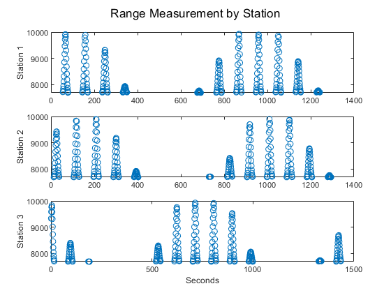 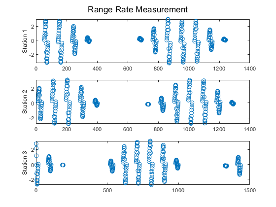
Elevation angle plot
figure(fig) subplot(3,1,1) plot(savedEleAng(1,1:10:end)', 'o') ylabel('Station 1') subplot(3,1,2) plot(savedEleAng(2,1:10:end)', 'o') ylabel('Station 2') subplot(3,1,3) plot(savedEleAng(3,1:10:end)', 'o') ylabel('Station 3') xlabel('Seconds') sgtitle('Elevation Angle') fig = fig + 1;

problem 3 part C - Doppler Shift
% plot range units and frequency shift figure(fig) subplot(3,1,1) plot(freqShift(1,1:10:end)', 'o') ylabel('Station 1') subplot(3,1,2) plot(freqShift(2,1:10:end)', 'o') ylabel('Station 2') subplot(3,1,3) plot(freqShift(3,1:10:end)', 'o') ylabel('Station 3') sgtitle('Frequency Shift') fig = fig + 1; % plot Range units figure(fig) subplot(3,1,1) plot(RU(1,1:10:end)', 'o') subplot(3,1,2) plot(RU(2,1:10:end)', 'o') subplot(3,1,3) plot(RU(3,1:10:end)', 'o') sgtitle('Range Units') fig = fig + 1;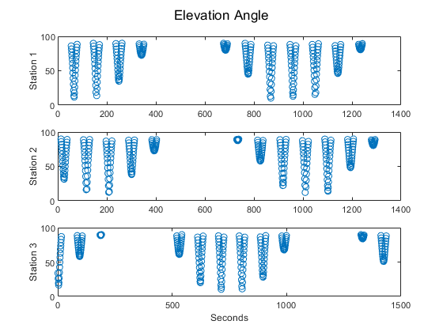 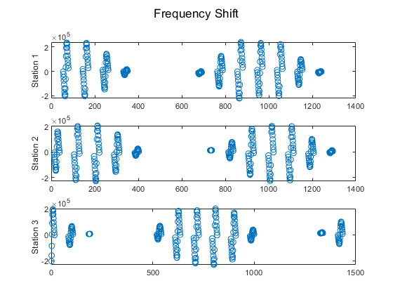 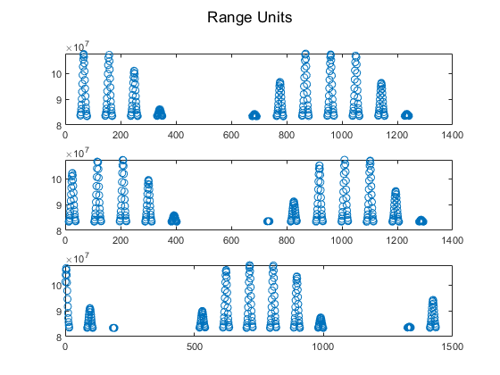
Part D - Range Rate Noise
sigmaNoise = 0.5*10^-6; % km/s rangeDotMeasNoise = rhoDotMeas' + sigmaNoise * randn(3,14929); figure(fig) subplot(3,1,1) plot(rangeDotMeasNoise(1,1:10:end)', 'o') ylabel('Station 1') subplot(3,1,2) plot(rangeDotMeasNoise(2,1:10:end)', 'o') ylabel('Station 2') subplot(3,1,3) plot(rangeDotMeasNoise(3,1:10:end)', 'o') ylabel('Station 3') sgtitle('Range Rate with Noise') fig = fig + 1;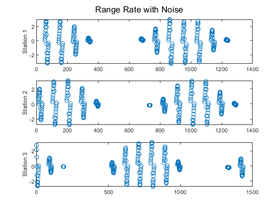
Noise Difference
rangeDotDiff = rangeDotMeasNoise - rhoDotMeas'; figure(fig) subplot(3,1,1) plot(rangeDotDiff(1,1:10:end)', 'o') ylabel('Station 1') subplot(3,1,2) plot(rangeDotDiff(2,1:10:end)', 'o') ylabel('Station 2') subplot(3,1,3) plot(rangeDotDiff(3,1:10:end)', 'o') ylabel('Station 3') sgtitle('Difference in Range Rate Noise') fig = fig + 1;